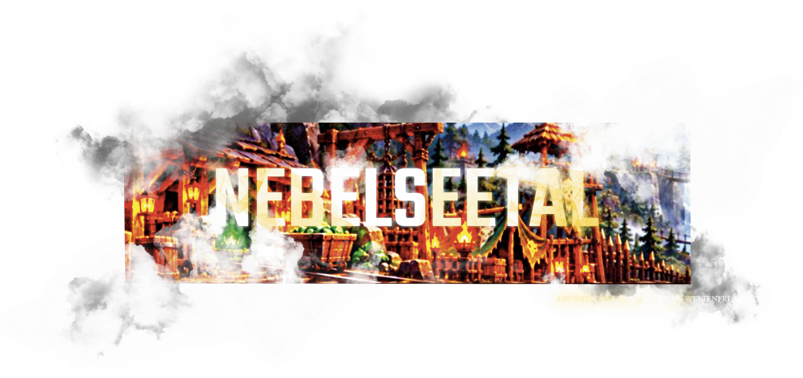

Logo: Chris Fred Däubner · entworfen für Daniel Kössl
Nebelseetal Remake
Einzelspieler-Remake des historischen Browserspiels Nebelseetal · Pre-Release V_0.0.3 (06.11.2026) · Windows, lokal, offline, kostenlos
Du bist ein Herrscher in einer zersprungenen Welt. Sechs Bruchstücke treiben im Limbus, verbunden nur durch Portale. Du gründest Siedlungen, produzierst Rohstoffe, stellst Waren her, forschst, rüstest aus, bildest Einheiten aus und kämpfst — gegen dich spielen fünf Nachbarn mit eigener Wirtschaft. Einen Sieg gibt es nicht, sondern Ruhm: vier Auszeichnungen für Krieg, Wissen, Handel und alles zusammen.
Testversion herunterladen Quellcode ansehen
Windows 11 getestet, 64 Bit. ZIP entpacken, Nebelseetal_Remake.exe starten, eigenes Passwort festlegen. Kein Python nötig, kein Internet. Eine macOS-Fassung gibt es nicht — sie müsste auf einem Mac gebaut und geprüft werden. Alle Testversionen stehen unter Releases (Vorabversionen müssen dort eingeblendet werden).
Was dieses Spiel will — die Vorstellung dahinter
Diese Absicht ist die Richtschnur für jede Änderung; sie steht ausführlich in dieser Erklärung.
- Das Original bleibt die Wahrheit. Jede Regel, jede Zahl wird gegen das Handbuch von 2009 und die Vorversion von 2006 gehalten. Was die Quelle nicht hergibt, wird nicht erfunden — es wird als Vorschlag gekennzeichnet und entschieden.
- Aufbauen soll sich lohnen, nicht warten. Der Reiz liegt in Entscheidungen: welches Feld, welche Forschung, welche Ware, welcher Nachbar. Leerlauf ist kein Spielinhalt.
- Die Nachbarn spielen mit. Fünf Herrscher mit eigener Wirtschaft, eigenen Dörfern, Armeen und Wappen; sie forschen, bauen, rauben und — in Arbeit — verhandeln sie: Gunst, Verträge und eine angesagte Rache.
- Ehrlichkeit vor Vollständigkeit. Diese Seite nennt, was fehlt. Ein Fehler, der benannt ist, ist besser als eine Funktion, die nur so aussieht, als gäbe es sie.
- Kein Konto, kein Netz, kein Preis. Ein Ordner, ein Doppelklick, ein eigener Spielstand auf dem eigenen Rechner.
Was in dieser Vorabversion steckt
- Siedlungen gründen und ausbauen, Rohstoffe, Waren, Werkstätten, Handel
- 21 Forschungen mit Voraussetzungen, Ausrüstung herstellen, 28 Einheiten ausbilden
- Kämpfe mit Wall, Schlachten in Sequenzen, Beute und Kriegspunkten
- fünf Nachbarn mit eigener Wirtschaft: sie forschen, bauen, gründen, rauben
- Portale in andere Welten mit Mana-Kosten je Entfernung
- die Geschichte der Welt: Intro, sieben Chronikkapitel, sprechende Nachbarn
- Diplomatie, erste Stufe: jeder Nachbar hat eine Gunst und daraus einen Status (feindselig, wachsam, freundlich) — Verträge und Rache folgen
Was noch fehlt — ehrlich
- Diplomatie ist erst zur Hälfte da: Nichtangriffspakt, Handelsabkommen, Rachetopf und die drei Ereignisse (Haug, Grom, Silra) sind entworfen, aber noch nicht eingebaut.
- Die Handelspunkte sind gebaut, werden aber noch nicht gebucht — sie stehen darum auf null.
- Drei Kampfregeln fehlen: Fluchtformel, Beute-Reihenfolge, Mauerreparatur mit Bauzeit.
- Kein Ton, keine Musik. Ansichten bauen sich beim Wechsel neu auf.
- Nur Windows, nur 64 Bit, nur auf einem Rechner getestet.
Weiterlesen
| Die offizielle Erklärung | was das Spiel genau ist — und was es nicht ist |
| Wie dieses Spiel entstanden ist | für Besucher: Entwicklung, Arbeitsweise, Sicherheit |
| Sechs Häuser, sechs Welten | Fraktionen mit Wappen, die Welten im Bild |
| Die Chronik der Welt | die Geschichte als gestaltetes Buch (PDF) |
| Wie das Projekt gebaut wird | der Wegweiser: Konzept, Ablauf, Messungen, Quellen, Prüfregeln |
| Erste Eindrücke einer späteren Version | Bilder von Fraktionen, Gebäuden, Burgen und Panoramen |
Wer dahinter steht
Daniel Kössl, angehender Fachinformatiker für Systemintegration — und der Hermes-Agent Weltenfresser, der Code, Prüfungen und Dokumentation beisteuert.
Sicherheit und Kontrolle stehen im ganzen System an erster Stelle: hierarchische Regeln, getrennte Lese- und Schreibrechte, protokollierte Änderungen. Mehr im Besucherdokument.